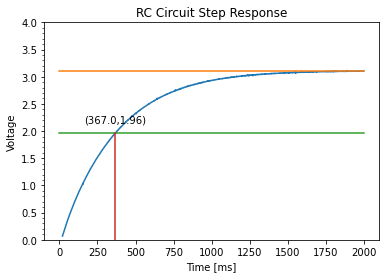

- Generated by
 1.9.0
1.9.0
|
ME 405: Lab 4
Interrupts
|
This exercise was an introduction to using internal interrupt on timer channels to have precisely controlled data collection. To practice this, we constructed a simple RC circuit and conducted a step response, which we measured at precise intervals using an interrupt. Because variables cannot be created inside interrupts, we used a precreated task_share Queue to save data points during the step response.
This exercise involved a main.py file running on the Nucleo, a StepResponse.py file running on the PC to process and plot the data, and the task_share.py file to implement the Queue.
The step response we obtained from our test is shown below in Figure 1.
Our circuit was constructed with a 100 kΩ resistor and a 3.3 μF capacitor. Therefore, the time constant of the circuit is simply
τ = RC,
which for us results in
τ = (1 x 10^5 Ω)(3.3 x 10^-6 F)
τ = 0.330 s.
This will be compared to the experimental result in the following section.
The following figure shows our plot of the step response with lines showing the final value, value at 1 time constant, and the value of the time constant. As shown on the plot, we found the value of the experimental time constant to be 0.367 s. This is an 11% difference from the theoretical value, which is well within the expected range considering the loose tolerances on electrical components.

Figure 1: Step response for RC Circuit showing time constant.